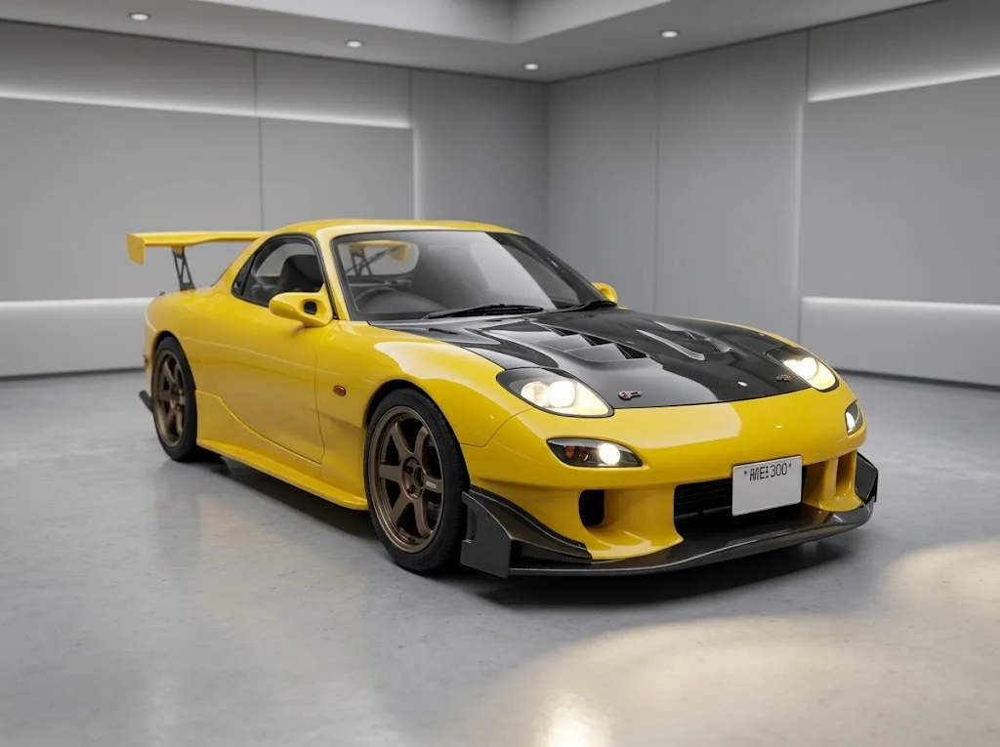
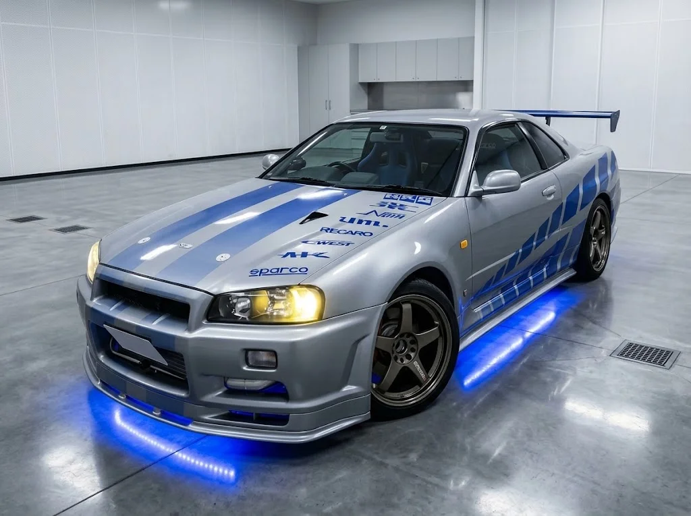
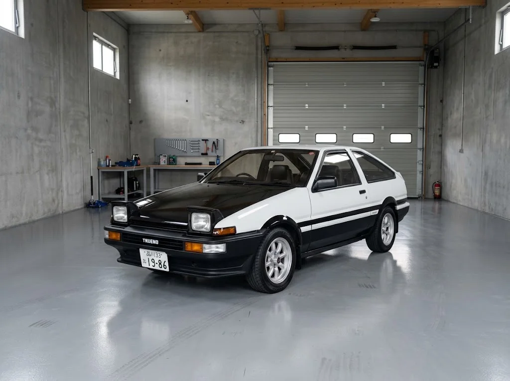
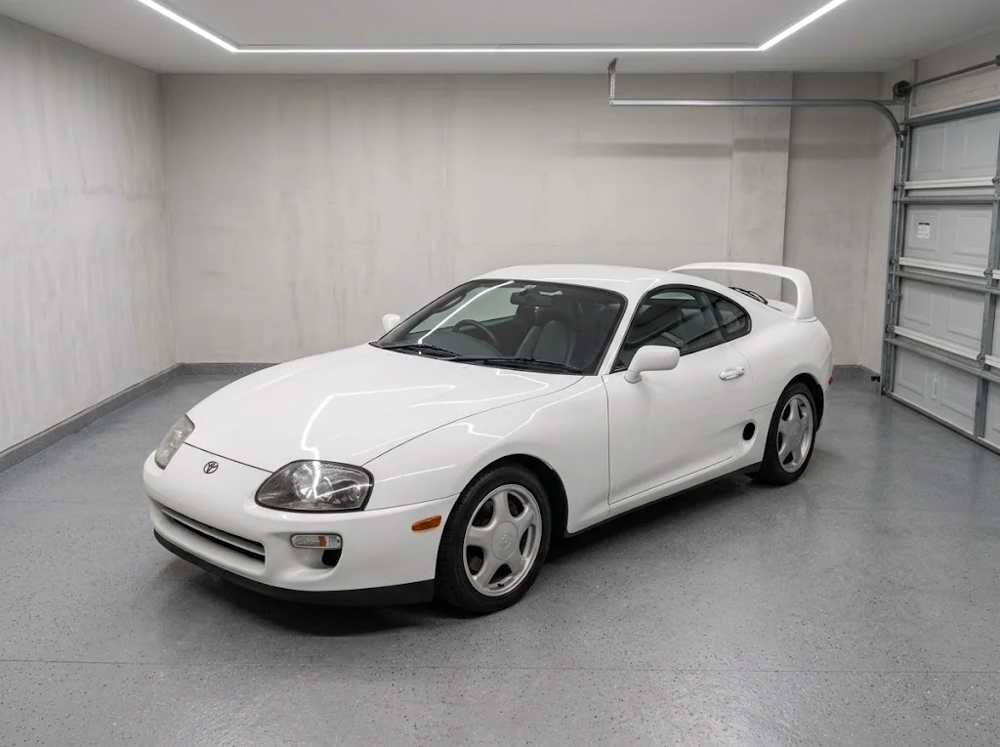
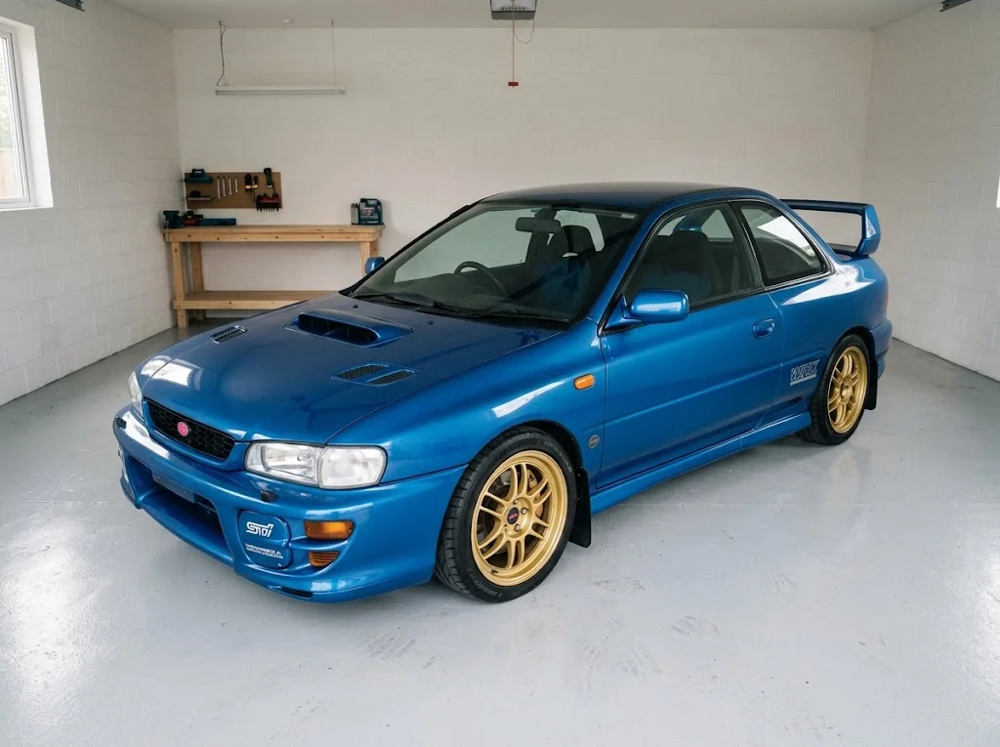
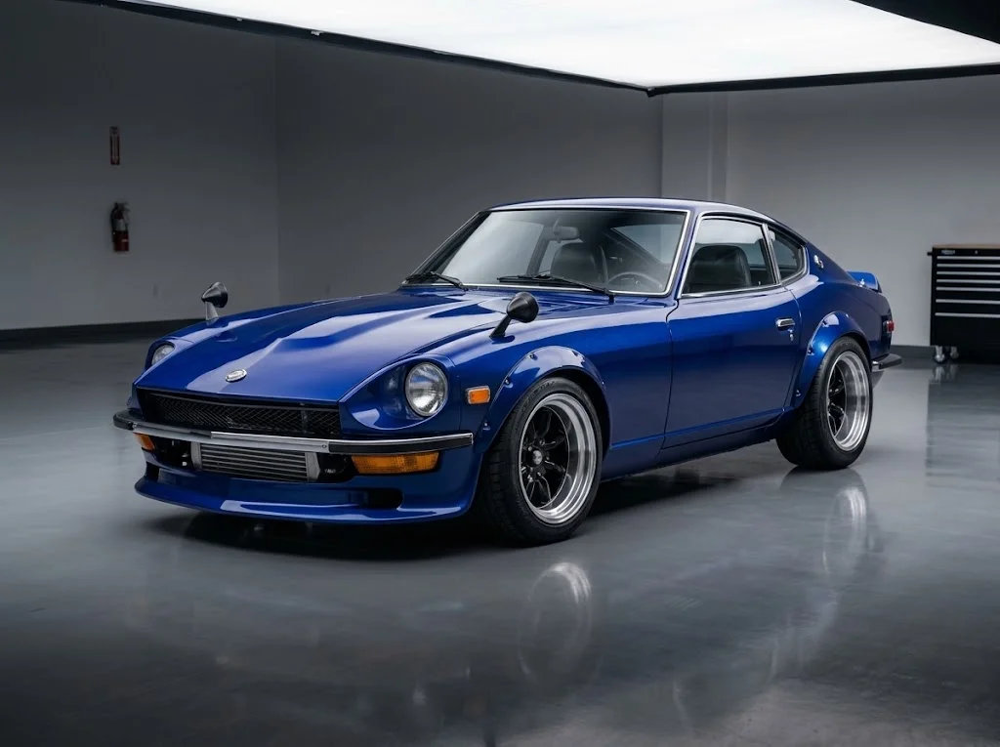

マツダ RX-7(FD3S)
ロータリーターボ / 後輪駆動
軽量ボディと低重心で、コーナーを鋭く曲がる。ロータリーエンジンの滑らかな吹け上がりが魅力。（個人的に一番好きな車です。FCもき）
- パワー
- 軽さ
- ハンドリング
- 安定性
エンジン音
各車の性能を5段階で表示しています。数値が高いほど優秀です。コースや走り方に合わせて車を選びましょう。
エンジン音は全車共通ですスマソ（´・ω・｀）

ロータリーターボ / 後輪駆動
軽量ボディと低重心で、コーナーを鋭く曲がる。ロータリーエンジンの滑らかな吹け上がりが魅力。（個人的に一番好きな車です。FCもき）
エンジン音

ツインターボ / 四輪駆動
四輪駆動で高いトラクションを発揮。重さを力で押し切る、ハイパワーの王道マシン。（R35よりもR34派です。）
エンジン音

自然吸気 / 後輪駆動
パワーは控えめだが、とにかく軽い。操る楽しさで勝負する、ドリフトの定番車。（ドライバーを育てる車）
エンジン音

ツインターボ / 後輪駆動
直列6気筒ツインターボの太いトルクが武器。高速域での安定感はピカイチ。（90もいいけど僅差で80派、直線バケモンのイメージ）
エンジン音

水平対向ターボ / 四輪駆動
ラリーで鍛えられた四輪駆動。路面を選ばず、コーナーを力強く駆け抜ける。（スバルでは一番好き、ラリー見てほしい1998のとか）
エンジン音

ターボ / 後輪駆動
『湾岸ミッドナイト』でアキオが乗る一台。長いボンネットの初代Zが、首都高を駆け抜ける。（なんかしらんけどすぐ廃車になりそう）
エンジン音
数値は代表的なグレードの公称値です(Zは初期型のZ432の値)。
| 車種 | エンジン | 最高出力 | 車重 | 駆動 |
|---|---|---|---|---|
| RX-7(FD3S) | 13B-REW 2ローターターボ | 280 PS | 約1,280 kg | FR |
| GT-R(BNR34) | RB26DETT 直6ツインターボ | 280 PS | 約1,540 kg | 4WD |
| AE86 | 4A-GE 直4 1.6L DOHC | 130 PS | 約940 kg | FR |
| スープラ(JZA80) | 2JZ-GTE 直6ツインターボ | 280 PS | 約1,500 kg | FR |
| インプレッサ WRX STi(GC8) | EJ20 水平対向4気筒ターボ | 280 PS | 約1,250 kg | 4WD |
| フェアレディZ(S30) | S20 直6 2.0L DOHC | 160 PS | 約1,040 kg | FR |